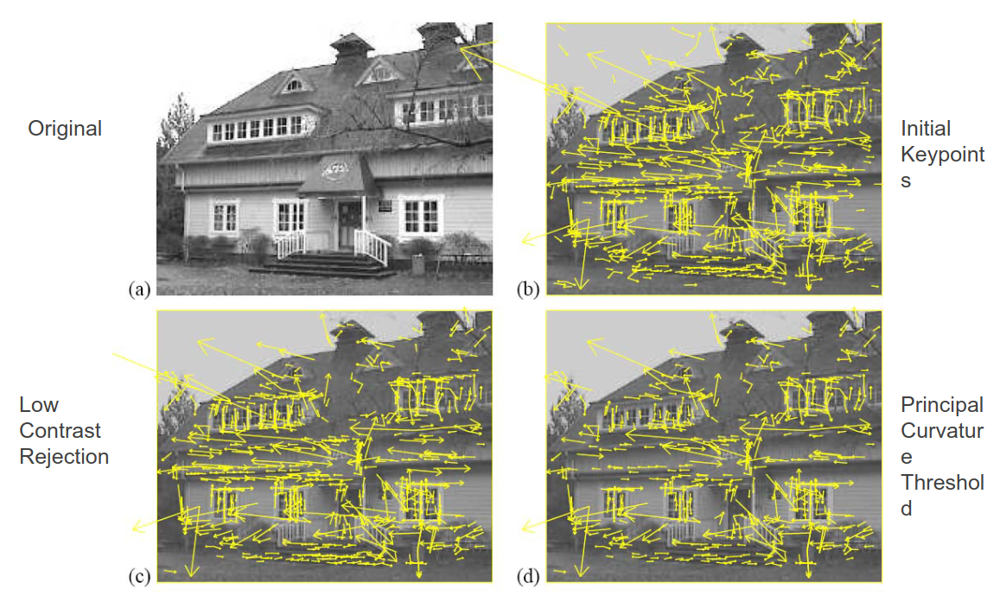
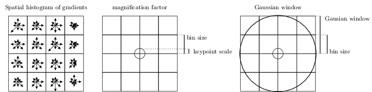
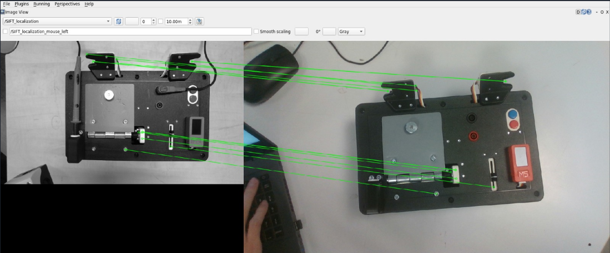

Perception de la taskboard avec SIFT
Ressources
A propos de “SIFT”
SIFT (Scale-invariant feature transform) est un algorithme de perception assistée par ordinateur permettant de détecter des zones d’intérêts dans une image, c’est-à-dire de faire une correspondance entre deux images ou deux flux, à partir des points qui peuvent être similaires entre les deux.
Cet algorithme a été publié par David Lowe en 1999, et le propriétaire du brevet est l’Université de la Colombie-Britannique (en anglais, University of British Columbia, UBC).
Cet algorithme inclut la reconnaissance d’objets et de mouvements (d’où son utilisation dans notre cas car on détecte la task-board en temps réel pendant l’exécution d’une tâche), de la modélisation 3D, mais aussi du suivi vidéo. Ici, on l’utilise donc la gestion des déplacements et de la planification des trajectoires du Panda Franka Emika par visualisation à l’aide de notre caméra de profondeur.
Cet algorithme consiste à rechercher des points caractéristiques (appelés « features ») sur une image (qu'on appellera l'image de référence) qui seront décrits chacun par des coordonnées (selon les deux axes dans le plan x et y), une orientation, une échelle, ainsi que 128 descripteurs (en fonction de la version de l’algorithme).
En résumé, l’idée générale de SIFT est donc de trouver des points-clés qui sont invariants à plusieurs transformations : rotation, échelle, illumination et changements mineurs du point de vue.
|

|
|---|
Fig. 35 Exemple de détection des points clés d’une image sous différents paramètres.
Qu’est-ce qu’un descripteur SIFT ?
Un descripteur SIFT est défini comme un histogramme spatial 3D des gradients de l’image caractérisant l’apparence d’un “point clé”. Le gradient de chaque pixel est considéré comme un échantillon d’un vecteur de caractéristique élémentaire tridimensionnel, formé par la position du pixel (selon x et y) et l’orientation du gradient. Les échantillons sont pondérés par la norme du gradient et accumulés dans un histogramme 3D appelé “h”, qui (après normalisation et étalonnage) forme le descripteur SIFT de la région. Une fonction de pondération gaussienne supplémentaire est appliquée pour donner moins d’importance aux gradients plus éloignés du centre du point clé.
|

|
|---|
Fig. 36 L’histogramme spatial 3D du gradient de l’image représente le SIFT descripteur
Les différentes étapes de l’algorithme SIFT
Méthodes utilisées
|

|
|---|
Fig. 43 Aperçu de la localisation par SIFT avec la correspondance des points entre l’image de la boîte et le flux de vidéo capturé par la caméra
Deux scripts python (localizer_sift.py et localizer_service) principales, permettent ici de réaliser la localisation de la task-board à l’aide d’une caméra :
class Localizer(self)
{
func __init__(self, template, cropping, depth)
# Fonction permettant de traiter les messages `CameraInfo` reçus de ROS
func camera_info_callback(self, msg)
func set_image(self, img)
func detect_points(self)
func annoted_image(self)
func compute_tf(self)
func compute_full_tf_in_m(self)
}
func compute_transform(points: np.ndarray, transformed_points: np.ndarray)
class LocalizationService(){
func __init__(self)
func compute_localization_in_pixels(self, img: Image)
func publish_annoted_image(self)
func handle_request(self, req)
func run(self)
}